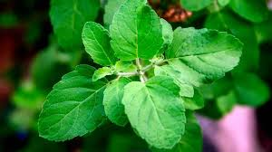
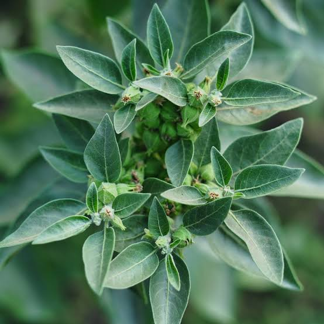

1.Neem

Azadirachta indica, commonly known as neem, margosa, nimtree or Indian lilac,[3] is a tree in the mahogany
family Meliaceae.
It isone of the two species in the genus Azadirachta. It is native to the Indian subcontinent and to
parts of Southeast Asia,
but is naturalized and grown around the world in tropical and subtropical areas. Its fruits
and seeds are the source of neem oil.
2.Tulsi
Tulasi is cultivated for religious and traditional medicine purposes, and also for its essential oil. It
is widely used as an herbal tea,
commonly used in Ayurveda.It is widely cultivated throughout the Southeast Asian
tropics.[1][4][5] It is native to tropical and
subtropical regions of Asia, Australia and the western Pacific.
3.Ashwagandha
Withania somnifera, known commonly as ashwagandha, is an evergreen shrub in the Solanaceae or
nightshade family that grows in
India, the Middle East, and parts of Africa.The plant, particularly its root powder,
has been used for centuries in traditional Indian
medicine. Ashwagandha supplements, typically containing root
or leaf powder or extracts, are commonly sold.